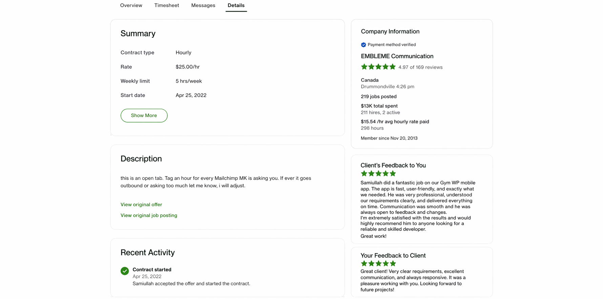
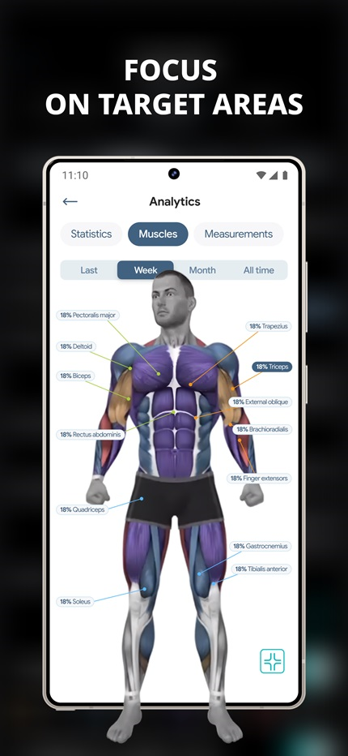
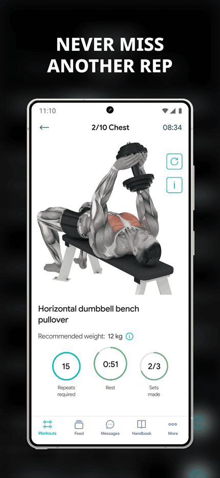
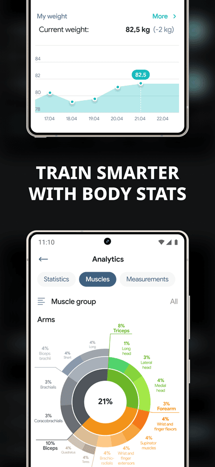
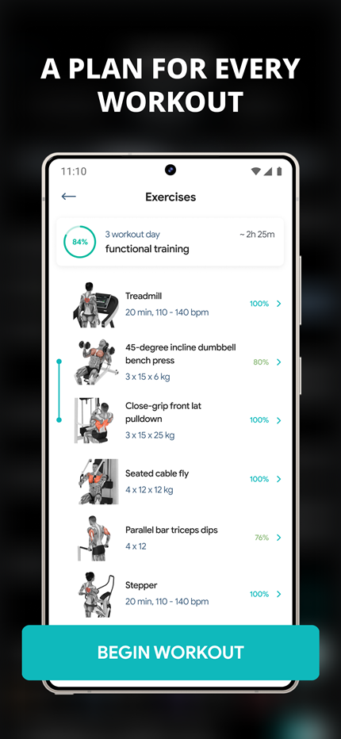
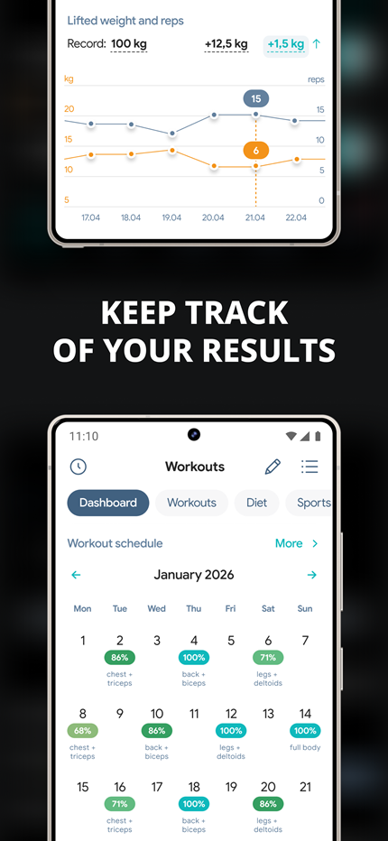
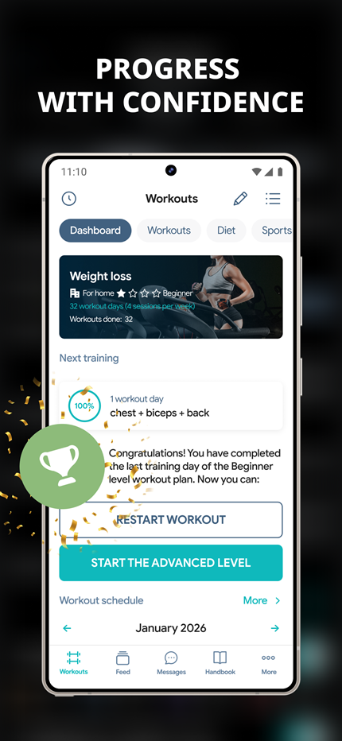

Tech Stack & Tools
Flutter
Dart
Provider
SQLite
SharedPreferences
FL Chart
animate_do
OpenAI API
Google Fonts
Gym WP is a full-featured Flutter fitness application built for a client and published on Google Play. The app leverages Flutter's cross-platform capabilities for smooth performance on Android devices. Provider manages state across workout sessions, user profiles, and progress tracking. SQLite stores workout history locally while SharedPreferences handles user preferences. FL Chart powers beautiful progress visualizations, and animate_do adds polished micro-interactions. The OpenAI API (GPT-3.5-turbo) drives an intelligent fitness assistant that provides personalized coaching, workout analysis, and nutrition guidance.
My Role
As the sole developer on this client project, I handled complete end-to-end delivery from concept to Google Play publication. I consulted directly with the client to understand their vision for a workout tracking app, then translated that into a fully functional Flutter application. I architected the local database schema (SQLite), implemented the provider-based state management system, and designed the modern UI/UX with a focus on clean aesthetics and intuitive workout logging.
I also integrated the OpenAI API to create an AI-powered fitness coach that analyzes workout data and provides personalized insights. The app includes full workout plan creation, exercise tracking (sets, reps, weights, duration), session logging, body metrics tracking (weight, height, BMI), and visual progress charts. I prepared the app for production, handled Play Store listing assets, and successfully published the release. Client credentials and sensitive data have been removed — the source code remains private per client agreement.

Client Review on Upwork

Complete Case Study
200+
Free 3D exercises with proper form visualization
15+
Targeted muscle groups including chest, arms, abs, full body
6
Fitness goals supported - weight loss, muscle gain, 6-pack abs, fat burning, conditioning, bodyweight
2x
User engagement improvement with community features and Q&A forum
The Fitness App: Gym Workout Plan is a comprehensive fitness tracking application built for a client whom I connected with through Workana. Whether you are trying to lose weight, gain muscle mass or want to have well-defined 6-pack abs – our gym planner fitness app offers full body workout plans with many free 3D exercises, to help users achieve their body goals. Users can choose from a variety of exercise plans targeted at specific muscle groups, such as chest workout, upper body workout, abs workout (stomach workout), arm workout and full body workout at home, or tailor them to a certain goal, such as fat burning workouts, conditioning workouts, or bodyweight workouts.
The client needed a comprehensive mobile solution that could deliver structured workout plans, track user progress, and build a fitness community. I built a fully customized cross-platform mobile application using React Native - including 3D exercise visualizations, workout planner with progress tracking, community Q&A forum, personal coach matching system, and integrated diet plans to enhance the fitness journey.
The main challenge was implementing interactive 3D exercise models that users could rotate and zoom to understand proper form. I integrated Three.js to create smooth, performant 3D visualizations that work across both iOS and Android devices. Another challenge was building the real-time community features including member profiles, Q&A forums, and coach matching - solved using Socket.io for instant messaging and MongoDB for scalable data storage. Additionally, implementing gender-specific workout routines (men's and women's optimized exercises) required careful database structuring and filtering logic.
After deploying the Fitness App, users eliminated the need for expensive personal trainers or confusing workout plans. What used to be inconsistent gym sessions with unclear progress is now structured, trackable workouts with 3D form guidance. Users receive a modern, interactive digital fitness companion instead of static PDF plans or random YouTube videos, which improved their engagement and results. The app's community features allow members to meet other fitness enthusiasts, log their workouts (beginner workout, gym stomach workout or abs home workout), ask questions, and receive competent answers from both coaches and peers. The client reported increased user retention and positive feedback on the 3D exercise library. This cardio workout app is now recognized as one of the best workout apps for men and free workout apps for women, as it allows users to select a gym routine for men or a gym routine for women. Keep fit at home or at the gym with the online community of this strength training app.






Walkthrough
How I Built The App
I started by designing the database schema using SQLite to store workouts, exercises, sets, and user progress data. The relational structure allows efficient queries for progress charts and historical session data. I then set up Provider for state management, ensuring real-time UI updates when users log workouts or update their profile.
For the UI, I built all screens from scratch using Flutter's widget system. The home screen features a quick start button, recent workouts, and daily motivation. The workout screen includes a drag-and-drop exercise reorder feature, set timers, and rest tracking. Progress screens use FL Chart to render animated line and bar charts showing volume trends and body metrics over time. I added animate_do for smooth fade-ins and slide transitions that make the app feel polished.
The AI assistant was integrated using the OpenAI API (GPT-3.5-turbo). I built a chat interface that sends workout history context with each request, allowing the AI to give personalized advice. The conversation history is cached locally to maintain continuity. I also implemented secure API key storage (excluded from public repo) and a fallback mode for offline scenarios.
Finally, I tested the app extensively on multiple Android devices, optimized performance (reducing build times and eliminating unnecessary rebuilds), and prepared Play Store assets including screenshots, feature graphics, and a privacy policy. The app was successfully published and is now available for download. The entire development cycle took approximately 6 weeks from initial consultation to Play Store launch.